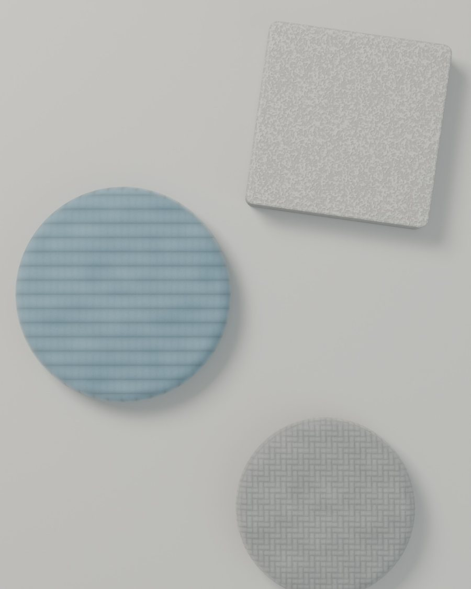

Theme T3 · Selected
Dematerialization vs rematerialization
T3 is the idea of authorship. Regardless of the materiality of the art object, it is what the artist envisions with intention.



Overall mood
Evidence of intention, not a look. A spec sheet, a woven credit line, a stitched name, a design drawing with no name: the paper and the signature behind the object. T3 sits behind the object, so this is not a color or surface board.

Definition and test
Regardless of the materiality of the art object, it is what the artist envisions with intention. On intention: the success of an outcome is measured only by the gap between intention and result; if the intention is bad, nothing matters.
This is deeper than just 'appreciate hand-craft', my whole identity as a living organism depend on getting answer to this question, who am [I] when i make things, and what am i not when I don't make things." He confirmed T3 as the keystone of the ten themes the same day.
The test. Is the intention stated before the result? How large is the gap between the two, and who judged it? Where did care reach the material, and can that be seen? In image terms: an image passes if the intention is written, drawn or stood for beside the result, or if it shows who did the making.
Limit: A photograph cannot show intention or care. It can show the paper trail of one: an instruction, a credit, a signature, a decision left in view. This board collects those traces and does not claim to measure the gap.
Visual themes (the four motifs)
01 Instruction beside result. A score, spec, drawing or certificate with, or standing for, the thing made from it. Images (01), (02). Strong for (02); (01) is an instruction without the result.
02 A decision made visible on the object. A seam, a join, a cut left for the wearer, a label that withholds a name. Image (03) only: parts laid out on the box, printed text on a part, a zip tie. Weak, see open items.
03 A credited or uncredited hand. Who made it, shown or deliberately hidden. Images (05) credited by name, (04) uncredited ("Anonymous"), (02) credited to a firm in the weave itself.
04 The author who did not make by hand. Work fabricated by others to the author's specification. Image (02): woven by Didier, Petit et Cie after a painting by C. Bonnefond. (01) stands for the same position (a pack sent to a factory) but the factory is not named on this page.
Against (what T3 replaces)
Two opponents, shown as counter-cases and not tagged T3.
Craft romance (06). The belief that the hand alone makes a thing authentic. a documentary photo of weavers at a hand loom; the uploader's own description calls it "a labor of love" with skills "passed down through generations". the photo is not romantic, the caption is. It is an honest counter-case because the romance is in the text that came with it.
Visual story
Read the row as a chain of authorship. A drawing and a spec leave the author's hand (01, 04). A weave names its executor (02). A girl stitches her own name into a sampler (05). Someone takes a finished shoe apart and signs the frame (03). Then the two cases T3 argues against: the hand loom as comfort (06), the image with nobody in it (07).
Visual elements
Photography. Documents and object close-ups in true color; counter-cases in the standard grade. Type and graphics. Plain captions (the number only); no loud graphics. Layout habits. Paper, drawing and spec first; the counter-cases last and marked in the sources.
Candidates from 2026-11-10 (earlier "rematerialization" reading)
They were chosen for rematerialization; the authorship definition now governs. - Kept as a likely fit, no image yet: Issey Miyake, A-POC (cut by the wearer from a tube; a decision left for the wearer, motif 02). The Image Collection holds one A-POC Able image (2026-11-11 SHOWstudio a-poc-able-02.jpg). I viewed it: heavily pleated gray cloth on a body. It shows the process result, not the cut or the decision, so I left it off the board and tag it T3? (see tagging). - Dropped for now: Hesse (Hang Up), Asawa, Bontecou, Albers, Hicks, Abakanowicz, Stockholder. Why: each is about material presence and handling, which was the old reading; none shows instruction, credit or a delegated hand. Albers and Hicks may return under T1 or a material theme. Not found as open or cleared images either.
Hero material
None. T3 is behind the object; no material carries it. Paper and thread appear because they are where intention was written down (drawing, spec, stitched name, weave).
Relation to T9 and T10
T10 and T9 are about how an object feels and how it ages; T3 is about who stands behind it, so it does not compete for the same images. T3 sits underneath both: T10's care test (does the care show?) and T9's trace of time are T3's question asked of a surface and of a lifetime. A T3 image can also be a T9 or T10 image; the tag says which question it was chosen for.